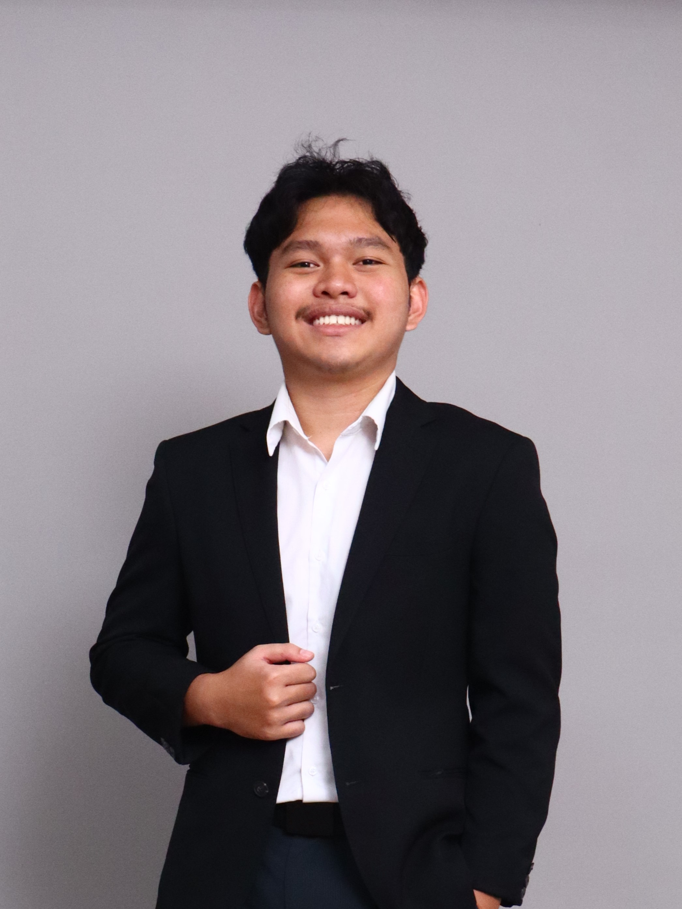

Hello! Nice to meet you.
ArdhanKawakibi
I am a
Management student at Universitas Brawijaya with experience in consulting, business strategy, and operational improvement, skilled in leading teams and transforming complex business challenges into sustainable growth strategies.

A Storyline of Me
Ardhan comes from a family with a background in the IT sector. From early elementary school, he got the opportunities to develop his motoric & cognitive skills through various activities: robotics (Fischertechnik) and Arduino. In this time, he was used to using computers; he also frequently played video games and watched movies in English settings.


The First Steps
Building on the computer and English skills he had developed at a young age, Ardhan became involved in various computer-based projects (Excel, Word, and OBS). Furthermore, his English proficiency, which placed him in the top 2.5% in his high-school, earned him the trust to take on a supervisory role in his school's language department. It was here that he gained significant problem-solving & leadership experience.


Exploring A Whole New World
Starting university opened up more opportunities than Ardhan could have imagined. Eager to explore, he joined various student organizations and committees, taking on almost every opportunity that came his way. As the year went on, he began to realize something: not every opportunity was meant to be taken. By the end of 2024, Ardhan started becoming more aware about the paths he wanted to pursue, choosing experiences that aligned better with his interests and goals.


The Gamechanger
2025 proved to be a major turning point in Ardhan’s career. Seeking more than just classroom learning, he undertook an internship near his home. On campus, he demonstrated his leadership and project management capabilities by organizing the first-ever equity research bootcamp for university students in Indonesia, an achievement that earned him recognition for his organizational contributions at UB, based on the scale and success of the project he led.


Finding His Place
By this point, Ardhan had developed a solid foundation in leadership and analytical thinking. Driven by a courage to make a more meaningful impact, he stepped into the Vice President role for 2 different organizations and participated in various research and consulting projects. During this time, he found himself drawn to understanding how businesses work. Thus, he committed himself to pursuing a career in the business sector.

What's Next?
Next year, Ardhan hopes to learn from exceptional individuals, collaborate with a passionate team & colleagues, and contribute in ways that create a tangible impact to his organization. He aspires to work for an impactful organization, also to keep bringing positivity to the people and communities around him.
Ardhan is open to internship opportunities, research collaborations, and projects that give him the chance to explore something new. He's always willing to learn, ready to take on new challenges, and determined to give his best to every team and every opportunity that comes his way.
Certificates & Credentials
A collection of certifications and credentials reflecting my continued learning, professional development, and commitment to building relevant skills.
Project Highlights
Here are a few projects from previous years that represents my work. Some projects cannot be shown because of confidentiality reasons.
1st Place National BPC At UNDIP
Conducted market research in agriculture industry and developed a full business plan proposal
Masterclass: Equity Research
Led a team of 50+ from various cohort and designed 10+ project management tools
Purpose-Led Final Summit
Researched Dove by Unilever regarding their Real Beauty campaign & purposeful initiatives
Site Survey Report At Pangalengan
Surveyed a site for property acquisition purposes & reported findings to company stakeholders
Open Tender Leader Organization
Intended for registering open tender CEO KSPM FEB UB, showing loyalty & courage to growth sustainably
Research For Indonesian Capital Market
Intended for a personal graphic design & research portfolio in the first place & for hobby purposes
Let's Work Together
Feel free to reach out through any of the channels below!